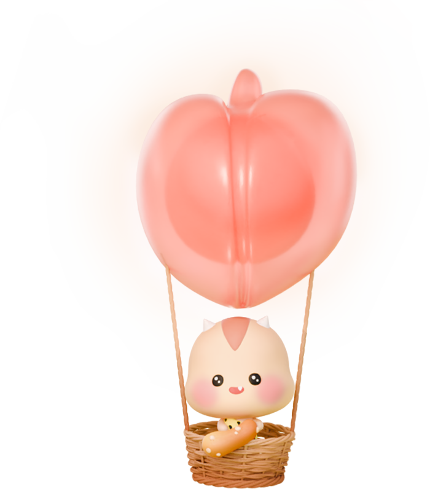

<!DOCTYPE html>
<html lang="en">
<head>
    <meta charset="UTF-8">
    <meta name="viewport" content="width=device-width, initial-scale=1.0">
    <title>CSS 배경</title>
    <style>
        body {margin: 0;}
        .section {
            position: relative;
            /* background-image: url(경로/이미지명); */
            background-image: url(./../../assets/ht/main_visual.jpg);
            background-repeat: no-repeat; /* bgr */
            /* contain: 요소 크기에 맞게 배경 이미지를 잘림없이 가로/세로 비율을 유지하면서 확대/축소시킴. 박스에 빈 영역이 생길 수 있음.*/
            /* background-size: contain; bgs */
            /* cover: 요소 크기에 맞게 배경 이미지의 가로/세로 비율을 유지하면서 확대/축소시킴. 이미지 일부 잘릴 수 있음. 박스에 빈 영역이 생기지 않음. */
            background-size: cover;
            background-size: 100px;
            background-size: 122.5%;
            /* background-size: 너비 높이;      잘 안 씀. 가로세로 비율 유지하는게 좋음 */
            /* background-size: 100% 120%; */
            /* background-position: x위치 y위치;  >>기본값은 0 0; */
            /* background-position: x위치; */
            background-position: -240px 0; /* bgp */
            background-position: 50% 0;
            /* x위치: left, right, center*/
            /* y위치: top, bottom, center*/
            background-position: center center;
            background-position: center; /* center center; */
            background-position: left; /* left center; */
            background-position: top; /* center top; */ 

            /* background: 색or이미지 [반복] [위치] [/크기] [고정여부]; */
            /* 기본값: transparent\none repeat 0 0/100% scroll; */
            background: url(./../../assets/ht/main_visual.jpg) no-repeat 50%/cover;

            height: 100vh;
        }

        .balloon {
            position: absolute;
            left: 63.5%;
            top: 9%;

            /* width: 326px; */
            /* vw:viewport width */
            width: 18vw;
            height: 371px;
            /* background-color: white; */
            background-image: url(./../../assets/ht/main_visual_ballon2.png);
            /* repeat: 반복(기본값) */
            /* no-repeat: 반복 없음 */
            /* repeat-x: x축(가로) 반복 */
            /* repeat-y: y축(세로) 반복 */
            background-repeat: no-repeat;
            background-size: contain;
        }
    </style>
</head>
<body>
    <div class="section">
        <div class="balloon">
            <!--  -->
        </div>
    </div>
</body>
</html>